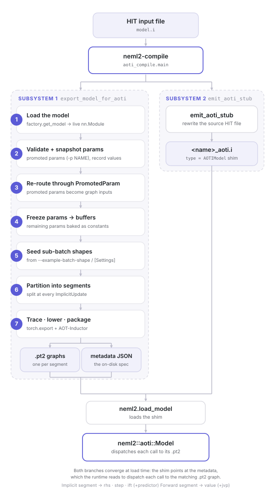

Compilation pipeline¶
This page is the contributor reference for what neml2-compile
actually does between reading a HIT input file and writing the
.pt2 artifacts described in AOTI packages. It’s aimed at
people maintaining the export path; downstream users who only want
to use a compiled model should start with
Compiled models.

Fig. 2 What neml2-compile does end to end: the export_model_for_aoti subsystem
(seven stages) lowers the live model into .pt2 graphs plus a metadata JSON,
while emit_aoti_stub rewrites the HIT file into an AOTIModel shim — the two
branches converging at load time on neml2::aoti::Model.¶
High-level shape¶
neml2-compile orchestrates two mostly-orthogonal subsystems:
Export — turns a live
nn.Moduleinto one or more.pt2graphs plus a metadata JSON. The public entry point isexport_model_for_aoti.Stub emission — rewrites the source HIT file so the original
[Models]/<name>block becomes anAOTIModelshim that points at the exported artifact.
The shim is what neml2.load_model ends up loading; the runtime
binding (neml2::aoti::Model, exposed through neml2.aoti.Model)
reads the metadata and dispatches each call to the right .pt2
graph.
The export path is the deeper of the two and breaks down into seven ordered stages:
Load the HIT file and instantiate the live model.
Validate and snapshot the promoted parameters (
-p NAME).Re-route the promoted parameters so they surface as graph inputs.
Freeze the remaining
nn.Parameters to buffers sotorch.exportbakes them as constants.Seed per-variable sub-batch shapes from the example shapes.
Partition the model into forward / implicit segments at every
ImplicitUpdateboundary.Trace + lower each segment through
torch.exportand AOT-Inductor; collect per-segment metadata.
The metadata dict accumulated across these stages is what AOTI packages documents on disk. Below, each stage expands on why it exists in addition to what it does.
Stage 1 — Load the model¶
The exporter parses the HIT file (via nmhit) and instantiates the
named [Models] block, returning a live Model (an nn.Module)
with all dependencies already resolved and wired.
The compiled artifact is a frozen snapshot of this live object —
re-running neml2-compile is the only way to pick up source
changes.
Stage 2 — Validate and snapshot promoted parameters¶
Each -p NAME flag promotes one fully-qualified parameter or buffer
from a baked constant to a runtime graph input. A bare (non-composed)
leaf is first wrapped in a single-child ComposedModel — matching the
eager runtime — so the promoted-name namespace is that of the wrapped
model: --model elasticity qualifies its parameters as elasticity.E
(a composed model’s are already qualified by their child-leaf names). The
exporter validates every promoted name and:
rejects any name that doesn’t resolve;
rejects any name that lives inside an
ImplicitUpdate’s equation system — the implicit-segment export wrappers have fixed(u_flat, g_flat)forward signatures and can’t yet accept a trailing pack of promoted parameters.
For each accepted name, the exporter records the initial value
before any rewriting. Those tensors land in the metadata’s
parameters array so the C++ side can populate
aoti::Model::named_parameters() at construction.
Stage 3 — Re-route promoted parameters to graph inputs¶
This stage transitions each promoted name from a static field on the leaf to a graph input the caller supplies on every invocation. The exporter routes promotion through the leaf’s existing nonlinear-parameter machinery rather than reaching in and mutating attribute storage directly: it deletes the static slot, appends the qualified name to the leaf’s input spec (typed via the wrapper class recorded when the parameter was declared), and registers a nonlinear-parameter entry keyed by that name.
Once that’s done, the next ComposedModel wrap downstream picks the
new inputs up through normal dependency resolution; the call boundary
re-wraps the incoming raw tensor in the right typed wrapper before
handing it to the leaf’s forward. The leaf implementation is
unchanged — the nonlinear-parameter pack abstracts the “baked vs
promoted” distinction away.
Stage 4 — Freeze remaining parameters to buffers¶
torch.export treats nn.Parameter as a graph input by default
and nn.Buffer as a constant. We want every non-promoted entry
folded into the kernel, so the exporter walks the module tree and
converts each surviving nn.Parameter into a persistent buffer
(deep-copy of the data, same dtype + device). Promoted entries are
already gone from the parameter dict (Stage 3) so this pass skips
them naturally.
Stage 5 — Seed sub-batch shapes from the example shapes¶
Some constitutive models — slip-system kinematics, multi-grain
plasticity — carry structured per-site dimensions on top of the
batch axis (the sub_batch_shape). The implicit-update tracer
needs that shape to build the right Schur/Block layout, but the
shape is only knowable from the example inputs.
The exporter resolves a per-input (dynamic, sub-batch) example
shape — --example-batch-shape on the CLI, then
[Settings]/example_batch_shape in the HIT file, then a small
built-in default that’s correct for the bulk-constitutive case — and
expands it over the model’s input spec. It then initializes every
nested implicit equation system with zero-tensor stand-ins of the
resolved shape, without running the Newton solver, so each
system’s per-variable sub_batch_shape is committed before the
tracer runs.
Stage 6 — Partition into segments¶
Every ImplicitUpdate becomes its own segment so the Newton loop
can be driven from the C++ orchestrator (one .pt2 call per step
until convergence). torch.export traces eager Python and can’t
trace while not converged, so the data-dependent loop boundary is
the natural split point.
Partitioning dispatches on the model’s shape:
root is an
ImplicitUpdate→ one implicit segment;root is a
ComposedModelcontaining anyImplicitUpdate→ flatten the leaves and walk in topological order; consecutive non-implicit leaves coalesce into a single forward segment, everyImplicitUpdatebecomes its own implicit segment;anything else → one forward segment.
At runtime each segment writes its outputs into a shared
name → tensor state map; the next segment reads its declared
inputs from that map. The shared map plus topological order is
what lets a multi-segment artifact present a single forward
contract to the loader.
Stage 7 — Trace, lower, package¶
Each segment routes through the project’s torch.export adapter — a
thin wrapper around torch.export.export + AOT-Inductor’s
compile-and-package, also exposed in-process as the public
compile. The adapter handles three pieces of machinery the raw
torch APIs don’t:
Dynamic batch dim. Every input gets axis 0 marked as a single
shared dynamic Dim so the lowered kernel specializes once and
serves any batch size in the supported range without recompilation.
The cost is modest extra symbolic-shape machinery inside the kernel;
the benefit is that a single artifact serves both single-point
evaluation and large fan-out runs.
Pytree-structured signatures. Typed wrappers (Scalar, SR2,
R2, …) are pytree-registered dataclasses. The adapter mirrors
their pytree structure when building the dynamic-shape spec so
torch.export sees the right dynamism on the underlying tensor
leaves, while static metadata (e.g. sub-batch widths) stays out of
the trace boundary.
Forward-signature variants. Different leaves use different
forward signatures — pure *inputs, named positionals followed by a
promoted-parameter pack, or named positionals only — and the adapter
normalizes the example list and dynamic-shape spec to whichever shape
the target leaf expects.
The lowered output is a .pt2 package per graph. Derivative graphs are
opt-in: neml2-compile emits them only for the output-input pairs
requested with -d/--derivative (none by default). Forward segments
always lower a value graph and, when a requested pair runs through them, a
per-variable-pair jvp graph emitting just the on-path blocks — a block
that does not depend on the dynamic batch is traced, and returned,
unbatched. Implicit segments always lower a Newton residual and a
fused assemble + solve + update step (plus an optional predictor), and
additionally an implicit-function-theorem sensitivity graph only when a
requested pair’s derivative path runs through them. The implicit-segment
graphs forward to whichever linear solver the source model is configured
with (DenseLU for the common single-group case; SchurComplement for
the BLOCK + DENSE 2-group factorisation).
The C++ orchestrator sees the same flat (u_flat, g_flat) → (u_new, b_new) contract either way — the multi-group / sub-batch
structure is internal to the .pt2.
After export: emit the HIT stub¶
Once each device’s metadata JSON and .pt2 graphs have been
written, the exporter rewrites the source HIT file into a standalone
stub:
find the top-level
[Models]block containing the target model (HIT allows multiple[Models]blocks — all of them are walked);emit a single
[Models]block holding only the target as a[<name>]sub-block withtype = AOTIModel. Sibling and unrelated[Models]entries are dropped — they’re unreachable from the shim at runtime;point the shim at the compiled artifact via an absolute
artifact_pathfield (the<model>/folder holding one<device>/subfolder per compiled device);carry
[Settings](with the legacyaoti_*keys stripped, since they would fail the v3 factory’s strict-key check) and[Tensors]from the original; keep[Drivers]only in--drivermode; drop[Data]and[EquationSystems](their state is baked into the.pt2);for an implicit model, carry a minimal
[Solvers]block — only the implicit model’s solver, and only its honored convergence / line-search knobs — and reference it from the shim via asolver = <name>field. Thelinear_solverfield is dropped on purpose: it is baked into the compiled step / IFT graphs, so editing it in the stub would have no effect.
The stub is written to <output-dir>/<model>_aoti.i, next to (not
inside) the <output-dir>/<model>/ artifact folder. Because the
artifact_path is recorded as an absolute path, the stub is
standalone but not relocatable: moving the artifacts requires
recompiling (or hand-editing the path). The loader (the Python shim
or the C++ load_model) resolves
<artifact_path>/<device>/<model>_meta.json for the device it runs
on.
See also¶
AOTI packages — on-disk artifact format and runtime API.
Compiled models — end-to-end how-to.
CLI utilities — the rest of the CLI surface, including
neml2-inspectagainst a compiled stub.